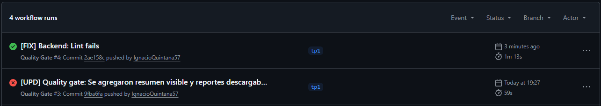
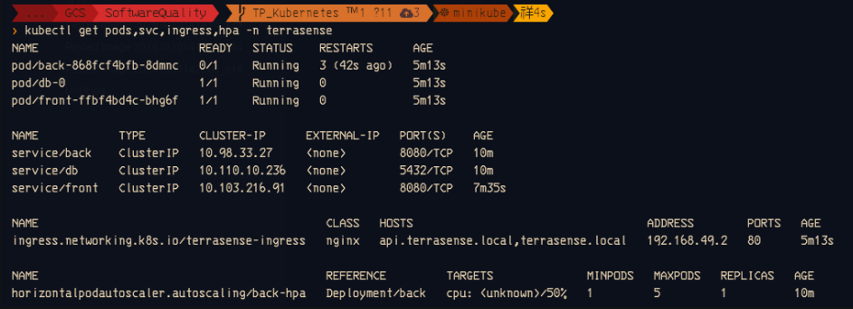
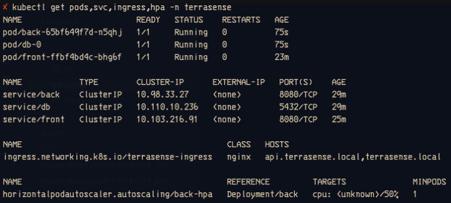
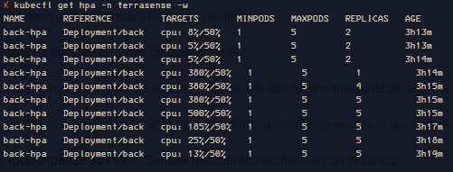
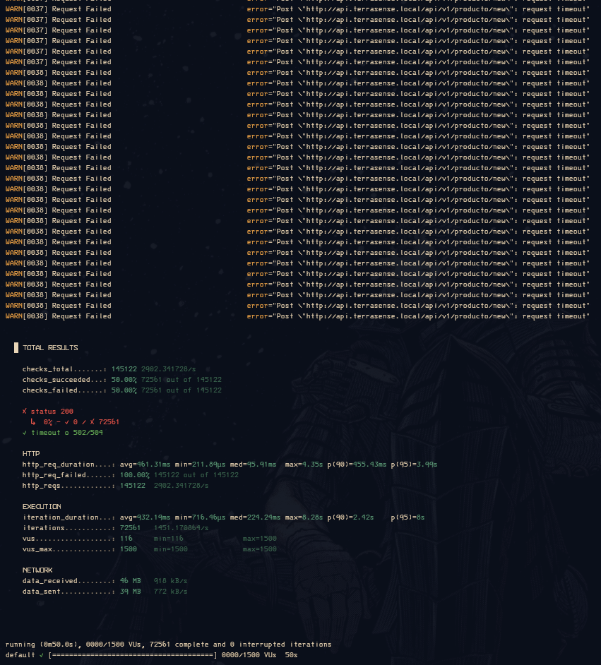
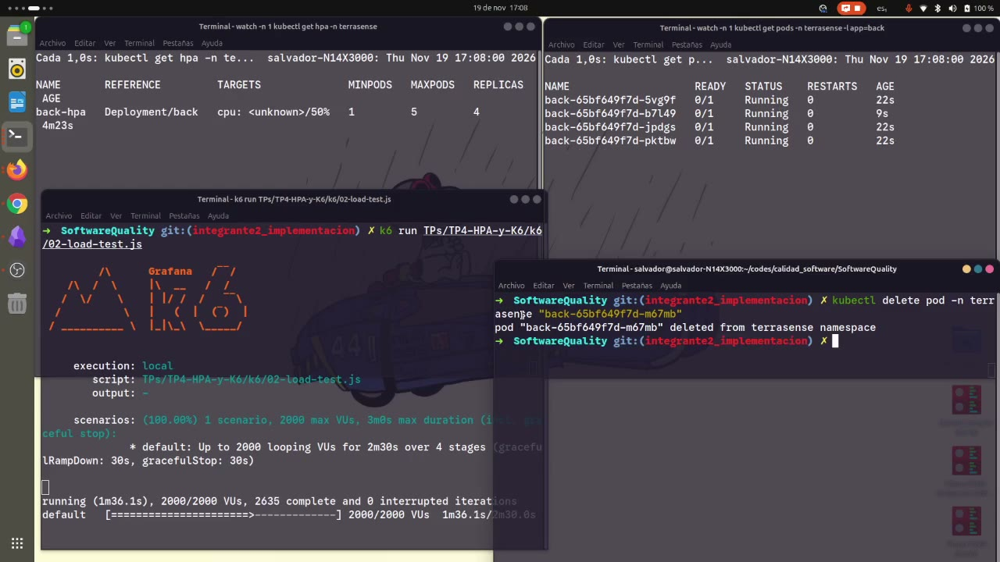
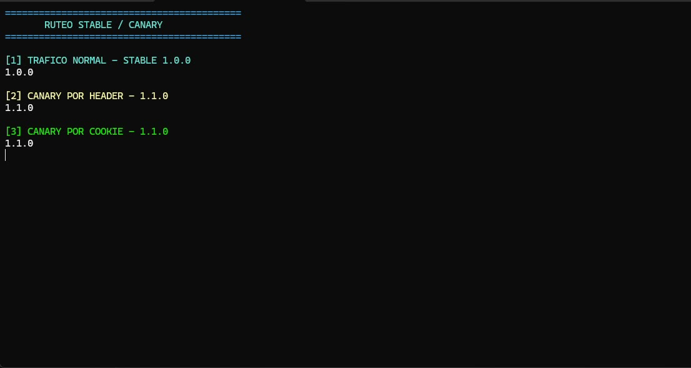
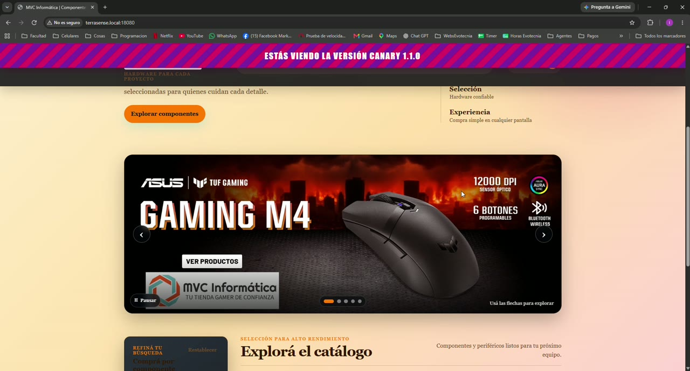
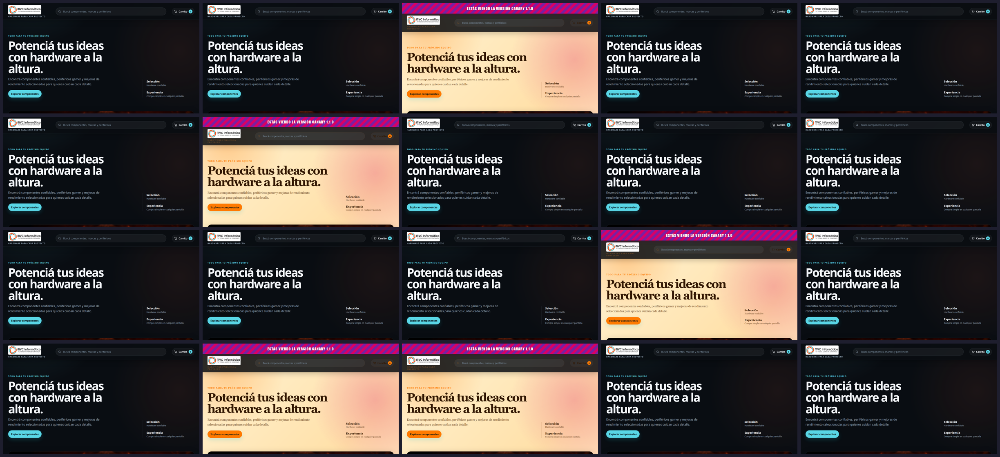
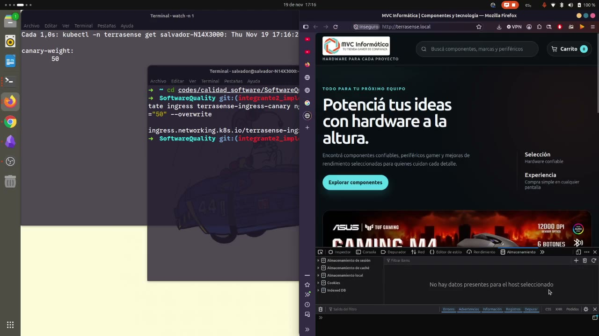

Del pipeline de CI
al despliegue Canary
Qué implementamos para asegurar la calidad de la aplicación, desde el código hasta producción: con qué objetivo y qué obtuvimos.
Lo que implementamos, para qué y qué obtuvimos
| # | Implementamos | Objetivo | Qué obtuvimos |
|---|---|---|---|
| 01 | Linters en CI Checkstyle + ESLint en GitHub Actions | Que ningún push con errores de estilo pase el pipeline | 24 → 0 errores, sin desactivar reglas |
| 02 | Análisis SAST Horusec | Detectar vulnerabilidades y secretos en el código | 13 alertas auditadas · 0 HIGH en la versión nueva |
| 03 | SonarQube + tests JaCoCo, JUnit, Vitest | Medir y corregir bugs, vulnerabilidades y cobertura | Bugs 15 → 2 · cobertura 7,9 → 33,1 % |
| 04 | Kubernetes + HPA Docker, Minikube, probes | Correr en un cluster con autoescalado y autorecuperación | Pods estables · HPA de 1 a 5 réplicas |
| 05 | Pruebas de carga y fallas k6 y k6/browser | Medir el sistema contra los SLO: p(95) < 300 ms y error < 1 % | Self-healing OK · cuello de botella en la base de datos |
| 06 | Despliegue Canary NGINX Ingress | Liberar versiones nuevas de a poco, con rollback inmediato | Falla detectada al 25 % · v1.1.0 promovida |
Cada etapa agrega una compuerta de calidad al camino del código
Código
Linters en CI
Horusec
SonarQube + tests
K8s + HPA
k6
Canary
Bloquea código con errores de estilo, vulnerabilidades o bugs antes de construir la imagen.
Mide si el sistema aguanta: rendimiento, escalado y recuperación ante fallas.
Expone la versión nueva de a poco, con usuarios reales y rollback en un comando.
Ningún push pasa con errores de estilo: el pipeline es la primera compuerta
- .github/workflows/quality-gate.yml · 2 jobs: Checkstyle y ESLint
- backend/config/checkstyle/checkstyle.xml
- build.gradle · maxWarnings = 0
- frontend/.eslintrc.cjs · --max-warnings 0
sin desactivar reglas

checkstyleMain FAILED por NeedBraces, VisibilityModifier y tabs.El pipeline bloquea el código que no cumple las reglas.
Auditamos cada alerta de seguridad en lugar de confiar en el resumen
- material/Horusec/horusec-config.json · config del laboratorio
- reportes JSON · backend y frontend
- ci/horusec-config.json
7 backend · 6 frontend
HIGH · INFO
13 falsos positivos
Hallazgo del proceso: la consola mostraba 2 alertas; el JSON completo tenía 13. Desde entonces leemos siempre el reporte completo.
| ID | Regla | Por qué es falso positivo |
|---|---|---|
| H03 | HS-JAVA-63 · CWE-209 HIGH | El catch solo hace return null: no expone el error. |
| H04 | HS-JAVA-63 · CWE-209 HIGH | printStackTrace queda en el servidor; el cliente recibe un mensaje genérico. |
| H10 | HS-JAVASCRIPT-1 · CWE-532 | Es un console.log comentado. |
| H13 | HS-JAVASCRIPT-1 · CWE-532 | console.error en el navegador sin datos sensibles. |
Gate propuesto: fallar el job con cualquier HIGH/CRITICAL o si Horusec no genera el reporte. Lo aplicamos después a la v1.1.0.
Cerramos 30 issues y cuadruplicamos la cobertura sin desactivar reglas
- sonar-project.properties
- docker-compose.sonar.yml · SonarQube local
- build.gradle · JaCoCo
- frontend/vitest.config.js · Vitest + coverage
- frontend/tests/*.test.jsx · 5 suites nuevas
- backend/src/test/.../*Test.java
55 → 25 issues abiertos. Evidencia: analisis-inicial.json y analisis-final.json, reportes JaCoCo y LCOV antes/después.
| Métrica SonarQube | Antes | Después |
|---|---|---|
| Bugs | 15 | 2 |
| Vulnerabilidades | 5 | 0 |
| Code smells | 35 | 23 |
| Cobertura global | 7,9 % | 33,1 % |
| Duplicación | 1,6 % | 1,1 % |
| Tests Java | 21 (6 fallan) | 62 OK |
| Tests frontend | 0 | 9 OK |
| Complejidad cognitiva | 124 | 129 |
No eran solo métricas: varias alertas eran fallas reales
Backend
S2142: se restauró la interrupción del hilo en 11 operaciones de repositorio (el hallazgo más riesgoso).S1168: 5 consultas devolvíannull; ahora colecciones vacías.S4507: 5printStackTracereemplazados.ProductoController: complejidad cognitiva 15 → 6.
Frontend
S2201: el carrito se actualiza de forma inmutable y ya no pierde altas consecutivas.S6479: keys estables en listas de React.S6439: la lista vacía ya no muestra un “0”.- Cobertura:
context.jsx95,7 % ·ItemList.jsx100 %.
Quality Gate propuesto para código nuevo: cobertura ≥ 80 % y duplicación < 3 %. El gate actual daba OK antes y después porque solo evalúa código nuevo: lo leemos como un límite de la herramienta.
Llevamos la app a Minikube con probes, límites y un perfil propio para PostgreSQL
- backend/Dockerfile · frontend/Dockerfile · multi-stage
- repositories/postgres/* · @Profile("k8s")
- k8s/03-db.yaml · StatefulSet + PVC
- k8s/04-backend.yaml · probes, requests/limits
- k8s/06-ingress.yaml · 07-hpa.yaml · 1–5 pods, CPU 50 %
limits.cpu: 300m
arranque 52,8 s vs probe a 40 s
→ 0/1, 3 restarts
limits.cpu: 500minitialDelaySeconds: 90
→ 1/1 Running

back en 0/1 con 3 reinicios.La livenessProbe mataba un pod sano que todavía estaba arrancando.
El HPA escaló de 1 a 5 pods, pero los SLO se rompieron por la base de datos
| Prueba | Carga | p(95) | Errores | SLO |
|---|---|---|---|---|
| Smoke | 2 VUs · 20 s | 2,01 s | 0,00 % | Parcial |
| Load | 0 → 2.000 VUs | 12,32 s | 98,10 % | Violado |
| Stress | 200 → 1.000 VUs | 5,00 s | 99,80 % | Violado |
Causa raíz: DriverManagerDataSource sin pool abre una conexión por consulta y agota max_connections = 100. Además, SELECT COUNT(*) por alta y lecturas sin paginación.
SLO: p(95) < 300 ms y errores < 1 %. Stress a 245 req/s, por debajo de los 333 req/s de 10.000 sensores.

Sobrevive a la caída de un pod, pero no a un pico repentino


Exit Code 143).La inercia del HPA (~15 s de métrica + ~52 s de arranque) no cubre picos verticales.El cluster escala y reemplaza un pod eliminado sin intervención

back-hpa escala a 4 réplicas bajo el load test de k6 y, al borrar back-…-m67mb, Kubernetes crea back-…-b7l49. evidencias/videos/video-1-hpa-failover.mp4Autoescalado y recuperación automática observados en vivo.Canary Release
de la v1.1.0
Ninguna versión llega al 100 % sin demostrar antes, con tráfico real, que funciona y cumple los SLO.
Dos versiones del panel detrás del mismo host, con el reparto en el Ingress
- k8s/base/ · DB, backend, HPA, ingress API
- k8s/stable/ · Deployment, Service, Ingress
- k8s/canary/ · Deployment, Service, Ingress canary
Comparación justa: 1 réplica, mismos 50m/150m CPU y 64Mi/128Mi, mismas probes en ambas.
Arranca seguro: peso 0. QA fuerza la v1.1.0 con X-Canary: always o la cookie canary=always.
Un cambio imposible de no notar, y que una máquina también puede leer

- frontend/Dockerfile · ARG APP_VERSION
- frontend/nginx.conf.template · header X-App-Version
Marca de versión: <meta name="app-version">, /version.txt y header X-App-Version. Tags explícitos, nunca latest.
- ESLint: 0 errores / warnings
- Vitest: 22 tests en verde
- Horusec: 0 Critical/High/Medium/Low
- INFO: 6 → 1 (H13, falso positivo ya auditado)
QA ve el panel nuevo antes que cualquier productor

1.0.0 · header X-Canary: always → 1.1.0 · cookie → 1.1.0.Con peso 0, solo quien la fuerza ve la v1.1.0.
canary=always, se recarga y aparece la v1.1.0.Smoke: 10/10 visitas a canary, 0 % errores, sin errores de consola.Criterios fijados antes de empezar; cada etapa decidida con datos
| Etapa | Hora | Stable / Canary | Error | p(95) canary | Decisión |
|---|---|---|---|---|---|
| 10 % | 16:21 | 90,25 / 9,75 % | 0,00 % | 1,67 ms | Avanzar |
| 25 % | 16:26 | 75,39 / 24,61 % | 0,00 % | 2,17 ms | Rollback: 6/20 en blanco |
| 25 % + afinidad | 16:34 | 15 / 5 visitas | 0 | LCP 471 ms | Avanzar |
| 50 % | 16:36 | 48,06 / 51,94 % | 0,00 % | 1,99 ms | Avanzar |
| 100 % | 17:20 | 0 / 100 % | 0,00 % | 2,41 ms | Promover |
| Promoción | 17:22 | stable → 1.1.0 · canary peso 0 y 0 réplicas | GO | ||
http_req_failed < 1 %p(95)canary < 300 ms o ≤ stable + 10 %- Reparto real ≈ peso
- Capturas de
k6/browsercompletas
Si falla: canary-weight: "0". Rollback en un comando.
El reparto medido coincidió con el peso configurado en cada etapa
Naranja: medido por header X-App-Version · línea negra: peso configurado.
Error 0,00 % en todas las etapas y p(95) canary ≤ 2,41 ms, muy por debajo de 300 ms.

El navegador real detectó pantallas en blanco que las métricas HTTP no veían
rootBytes = 0).6 de 20 visitas (30 %) en blanco, con HTTP 200 y 0 % de error en k6 HTTP.El HTML de una versión pide index-DRF0YwY2.js, la request llega a un pod de la otra versión (index-DWX9FPhn.js) y try_files devuelve el HTML con 200 OK en lugar del JS.
- 16:32 · rollback a peso 0, en un comando
- Afinidad por cookie
terrasense-front(Anexo A.9) - API movida a
06-ingress-api.yamlpara no pegarla a un pod
completas
completas · LCP p95 471 ms
Mover el tráfico y volver atrás es cambiar un solo valor

canary-weight pasa 0 → 50 → 100 → 0 y, al limpiar la cookie sticky, el panel alterna entre v1.0.0 y v1.1.0. evidencias/videos/video-2-canary-rollout.mp4El rollback a peso 0 es inmediato y no requiere redeploy.A/B 50/50 hasta 500 VUs: la v1.1.0 no introduce regresión
La v1.1.0 mantiene error < 1 % y p(95) < 300 ms, sin degradar el p(95) más de 10 % frente a la v1.0.0 bajo igual carga.
El riesgo es el rediseño: CSS nuevo, logo de ~619 KB y otro bundle JS. Solo comparando bajo la misma carga se ve una regresión.
1 réplica cada una · 50m/150m CPU · 64Mi/128Mi · mismas probes · rampa 50 → 150 → 300 → 500 VUs.
| Métrica (HTML + JS) | v1.0.0 | v1.1.0 |
|---|---|---|
| Cargas completas | 60.398 | 60.033 |
| Tasa de error | 0,00 % | 0,00 % |
| p(95) combinado | 315,88 ms | 319,41 ms +1,12 % |
| Mediana | 78,90 ms | 79,23 ms |
| CPU en pico | 81m | 69m |
240.862 requests · 1.851 req/s · p(95) por request individual 180,50 ms
Hipótesis de no regresión: confirmada. El p(95) combinado roza 300 ms en el pico en ambas versiones por igual (saturación del Ingress local), no por la v1.1.0. → GO para promover.
Qué calidad aseguramos en cada etapa, y qué no
| Etapa | ISO/IEC 25010 | Evidencia | Qué no cubre | SQuaRE |
|---|---|---|---|---|
| Linters en CI | Mantenibilidad: analizabilidad, modificabilidad | 10 + 14 → 0 errores | Diseño modular, seguridad, lógica | 2503n · 2502n |
| Horusec (SAST) | Seguridad: confidencialidad, integridad | 13 alertas, 13 FP; 0 HIGH en v1.1.0 | Fallas en runtime (DAST), dependencias | 2502n · 2504n |
| SonarQube + tests | Mantenibilidad · Fiabilidad (ausencia de fallos) | Bugs 15 → 2 · cobertura 33,1 % | Integración real con DB y red | 2502n · 2503n |
| K8s + probes | Fiabilidad (disponibilidad) · Flexibilidad (instalabilidad) | 1/1 Running tras ajustar probes | Rendimiento bajo carga | 2504n |
| HPA | Flexibilidad (escalabilidad) · Eficiencia (recursos) | 1 → 5 pods con 500 % CPU | Escalar la DB; picos repentinos | 2503n · 2502n |
| k6 carga/estrés | Eficiencia: comportamiento temporal, capacidad | Load 98 % error · A/B +1,12 % | Lo que ve el usuario en pantalla | 2503n · 2502n |
| Fallas E1/E2 | Fiabilidad: tolerancia a fallos, recuperabilidad | E1 0 % · E2 100 % y Exit 143 | Recuperación instantánea con 1 réplica | 2504n · 25045 |
| Canary | Fiabilidad · Flexibilidad (reemplazabilidad) · Protección (fail safe) | Rollback en 1 comando; 14/20 → 20/20 | Fallas de backend o DB compartidos | 2503n · 2504n |
El canary nos llevó de medir el producto a medir lo que vive el usuario
Atributos del artefacto: estilo, vulnerabilidades potenciales, bugs y cobertura.
k6/browser renderiza la tienda mientras cae un pod: LCP 476 ms, CLS 0,09.
HTTP decía 200 OK y el usuario veía una pantalla en blanco. Solo el uso real lo reveló.
Características sin cubrir y cómo las abordaríamos
Lighthouse CI / axe-core en quality-gate.yml, sobre el build del front antes de construir la imagen. Umbral: accesibilidad ≥ 90 y 0 violaciones WCAG críticas.
Contract testing OpenAPI (Schemathesis) entre front y API, más Trivy / npm audit como compuerta antes de publicar la imagen.
TerraSense libera la v1.1.0 del panel: qué hace cada cosa que implementamos
Cada release reemplazaba todos los pods de una vez. Uno dejó a los productores 40 minutos con la pantalla en blanco, en una madrugada de helada.
Que ninguna versión llegue al 100 % sin demostrar que funciona, y saber si la plataforma soporta pasar de 2.000 a 10.000 sensores.
Sin canary, el 30 % de pantallas en blanco que detectamos al 25 % habría sido el 100 % de los productores: el mismo incidente.
| # | Etapa | Qué hizo con la v1.1.0 |
|---|---|---|
| 01 | Linters en CI | Push validado: 0 errores de Checkstyle y ESLint |
| 02 | SAST | 0 vulnerabilidades nuevas antes de construir la imagen |
| 03 | Tests | 22 tests de Vitest en verde sobre el rediseño |
| 04 | Kubernetes | Imagen 1.1.0 versionada, con probes y recursos iguales a la estable |
| 06 | Canary al 25 % | 6/20 pantallas en blanco → rollback en un comando y fix con afinidad |
| 05 | Estrés A/B | Sin regresión: +1,12 % p(95) y 0 % de error → promoción |
| 05 | Carga a la API | Con 245 req/s ya falla el 99,8 %: no alcanza para 10.000 sensores |
Go / No-Go
Panel v1.1.0
- Pasó lint, 22 tests y Horusec sin hallazgos nuevos
- Rollout 10 → 25 → 50 → 100 % con 0 % de error
- Detectó y corrigió la pantalla en blanco antes del 100 %
- A/B: +1,12 % p(95), sin regresión
- 17:22 · stable =
1.1.0, canary a 0
Ampliar a 10.000 sensores
- 10.000 sensores ≈ 333 req/s sostenidos
- Con 245 req/s ya hubo 99,8 % de fallos en el stress test
- Spike de 1.500 VUs: 100 % de fallos
- Causa: sin pool JDBC,
COUNT(*)por alta, sin paginación
Para pasar a GO: HikariCP con pool por pod · secuencias de PostgreSQL · paginación · mínimo 2–3 réplicas · cola de ingesta (RabbitMQ/Kafka) para reconexiones masivas. Después, repetir el stress test a 333 req/s.
Lo que nos llevamos
Las métricas HTTP decían 0 % de error mientras 30 % de las pantallas quedaban en blanco.
Arranque de 52,8 s vs. probe a 40 s: una probe mal calibrada reinicia pods sanos.
Horusec mostraba 2 alertas en consola y 13 en el JSON; sobre todo el repo daba 33.
HikariCP y paginación en el backend · gate de cobertura en código nuevo · Lighthouse/Trivy en CI · migrar el canary de Ingress NGINX (retirado en 2026) a Gateway API con pesos en HTTPRoute.
La calidad no es una herramienta: es una cadena de compuertas. El Canary es la última, la que mira a los usuarios reales.